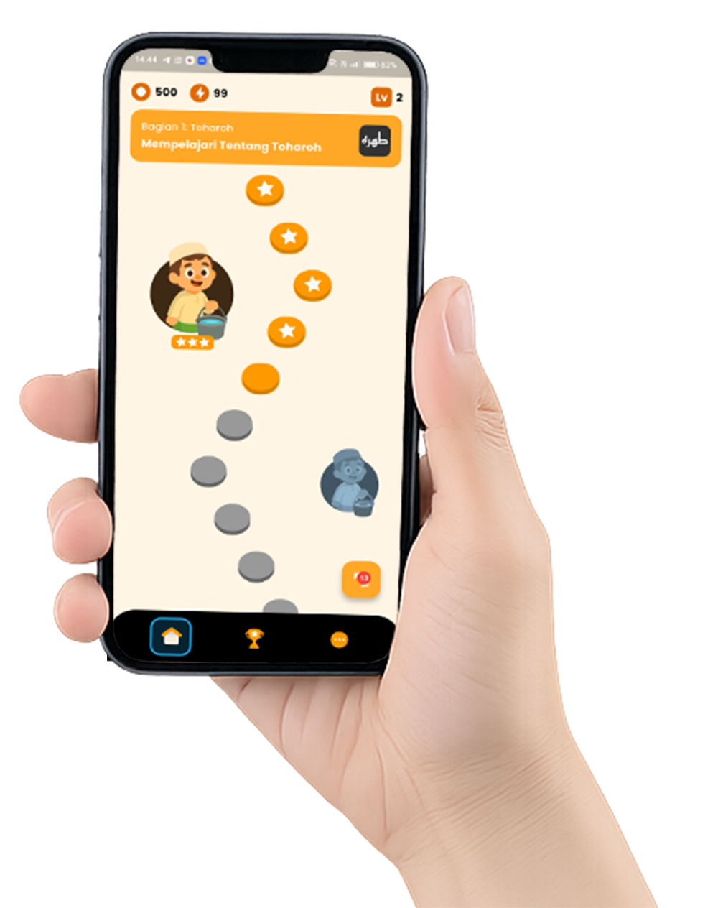

Fiqoo adalah aplikasi belajar fiqih interaktif — seperti Duolingo tapi untuk ilmu syariat. Dari thaharah sampai muamalah, semua bisa dipelajari dengan seru dan menyenangkan.

Dirancang untuk membuat belajar fiqih terasa seperti bermain game — seru, konsisten, dan efektif untuk semua kalangan.
Kurikulum fiqih terstruktur dari dasar hingga mahir. Ikuti jalur belajar yang dirancang ulama dan dikemas secara visual layaknya peta petualangan.
Thaharah — Shalat — Zakat — HajjLatihan soal harian dengan sistem streak dan XP. Drill pertanyaan fiqih berulang kali sampai benar-benar paham — berbasis spaced repetition.
Daily StreakBelajar sambil main! Minigame interaktif seperti Najis Simulator untuk menguji pemahaman thaharah dalam situasi nyata yang seru dan menggelitik.
Najis SimulatorEmpat langkah sederhana untuk mulai perjalanan belajar fiqih kamu bersama Fiqoo.
Mulai dari bab thaharah, shalat, puasa, hingga muamalah sesuai kebutuhan kamu.
Materi disajikan dengan ilustrasi, audio, dan contoh nyata yang mudah dipahami.
Uji pemahaman lewat kuis harian, kumpulkan XP dan jaga streak belajar kamu.
Asah pemahaman dengan simulasi seru yang bikin belajar jadi nagih tiap hari.
Minigame pertama Fiqoo yang bikin belajar thaharah jadi asyik. Hadapi berbagai situasi sehari-hari, tentukan hukum najisnya, dan pilih cara bersucinya.
Fiqoo masih dalam tahap pengembangan aktif dan belum tersedia di Play Store maupun App Store. Daftarkan dirimu sebagai Beta Tester dan coba lebih awal sebelum semua orang.
Kami tidak akan spam. Hanya notifikasi saat beta tersedia.
Fiqoo dibangun dengan semangat menyebarkan ilmu syariat secara modern. Kami mencari orang-orang bersemangat yang ingin berkontribusi — dari developer hingga ulama konsultan.
Bantu kami membangun tampilan dan fitur interaktif yang optimal untuk Android & iOS.
Rancang pengalaman belajar yang intuitif, menarik, dan sesuai identitas visual Fiqoo.
Punya ilmu syariat? Susun materi fiqih yang akurat, mudah dipahami, dan sesuai mazhab.
Tes fitur baru, laporkan bug, dan pastikan Fiqoo berjalan sempurna di semua perangkat.
Sebarkan Fiqoo ke komunitas muslim, santri, dan pelajar sebagai wajah dakwah digital.
Verifikasi konten fiqih agar sesuai rujukan kitab klasik dan pendapat mazhab yang sahih.
Tidak perlu berpengalaman puluhan tahun. Yang kami butuhkan adalah semangat, komitmen, dan keinginan untuk berkontribusi pada proyek dakwah digital yang bermakna ini.
Hubungi Tim KamiAkhirnya ada aplikasi fiqih yang seru! Najis Simulator bikin langsung paham hukumnya. Lebih masuk daripada baca kitab sendiri.
Learning Path-nya sangat terstruktur. Saya yang awam jadi tahu urutan belajar fiqih dari mana. Streak harian bikin konsisten tiap hari!
Quiz drilling-nya mirip Anki tapi jauh lebih menyenangkan. Tinggal nunggu materi zakat dan haji lengkap, pasti wajib direkomendasikan ke semua santri!